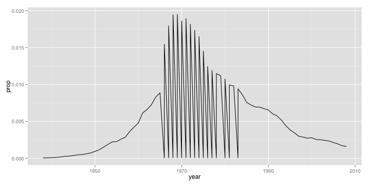
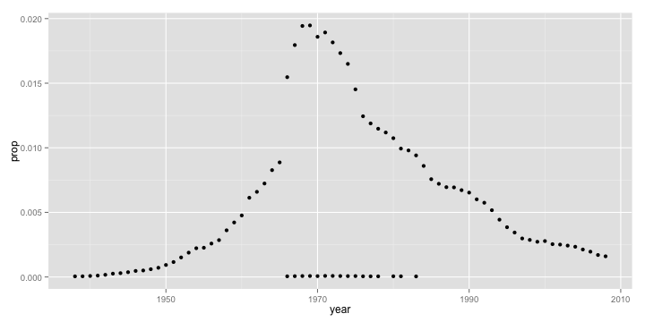
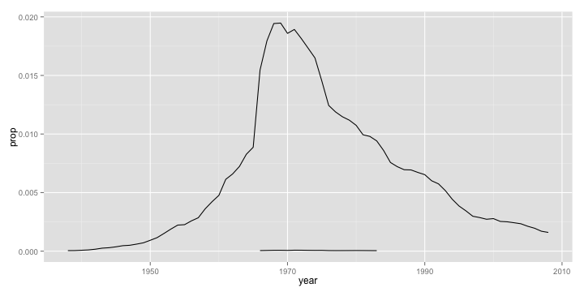
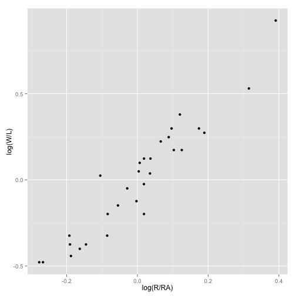
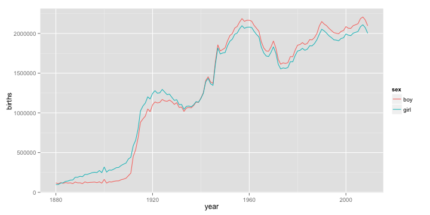
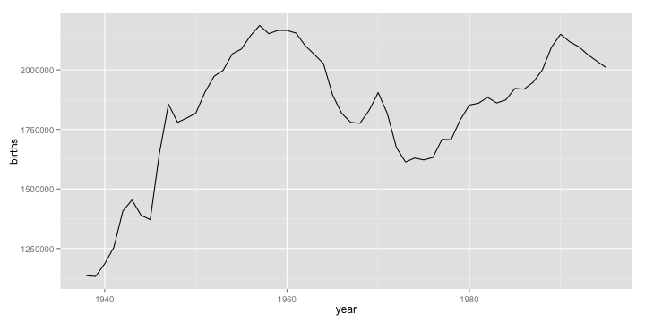

Summarize
Baby Names
The first dataset we will be exploring is the bnames2 dataset, which consists of the
top 1000 male and female baby names in the US, from 1880 to 2008. It consists of 258,000 records (1000 x 2 x 129) with five ariables: year, name, soundex, sex and prop.
Let us begin by reading the dataset into our R session. Note that read.csv can work directly on the zipped file, so there is no reason to unzip it prior to reading.
# tf <- 'bnames2.csv.bz2')
# downloader::download("http://stat405.had.co.nz/data/bnames2.csv.bz2", tf)
bnames2 <- read.csv("bnames2.csv.bz2")
| year | name | prop | sex | soundex |
|---|---|---|---|---|
| 1880 | John | 0.08 | boy | J500 |
| 1880 | William | 0.08 | boy | W450 |
| 1880 | James | 0.05 | boy | J520 |
| 1880 | Charles | 0.05 | boy | C642 |
| 1880 | George | 0.04 | boy | G620 |
| 1880 | Frank | 0.03 | boy | F652 |
There are several interesting questions one might ask with this sort of data. Let us start with a simple question of tracking the popularity of a specific name over time. It is usual for people to try and track their own name. However, given that my name is nowhere to be found in this dataset, I am going to use Greg, since I knew beforehand that he was going to be in the audience (Sorry Greg!)
greg <- subset(bnames2, name == "Greg")
It is easier to explore data visually. So let us plot the trend using ggplot2. This is going to be a light-weight introduction to this wonderful package, of which we are going to see more in later sessions.
The code below is self-explanatory. We are using the qplot function (which stands for quickplot), and asking it to give us a line plot of year vs. prop, both of which can be found in the dataset greg.
library(ggplot2)
qplot(x = year, y = prop, data = greg, geom = 'line')

We see (quite unexpectedly I think!) that Greg as a name peaked in popularity sometime in 1965 and has since been on the decline.
Let us take another name at random, say "Michelle"
michelle <- subset(bnames2, name == "Michelle")
qplot(x = year, y = prop, data = michelle, geom = 'line')

Mmm.. this looks like a big mess. Why do we see this awful sawtooth like pattern? Can you come up with a reason?
Let us plot the same data using point instead of line.
qplot(x = year, y = prop, data = michelle, geom = 'point')

It seems like there are two clusters of data. Well, it is not surprising since Michelle is a name used for both boys and girls. So, if we were to create a line plot, we should make sure to tell qplot to group the variables by sex.
qplot(x = year, y = prop, data = michelle, geom = 'line', group = sex)

Note that we could also tell qplot to color the lines based on sex by passing color = sex in the call. We don't have to set the group argument, since qplot will automatically do it for us. Magical right!
Exercise 1
Repeat the same exercises we did for name with the variable soundex. In other words, use the soundex variable to extract all names that sound like yours and plot their popularity. Make sure to think about the geom you would like to use!
Solution 1
greg_soundex = greg$soundex[1]
greg_like <- subset(bnames2, soundex == greg_soundex)
qplot(x = year, y = prop, data = greg_like, geom = 'point')

If we had to track the popularity of a specific soundex, we need to summarize the data by aggregating the values of prop across all names with the same soundex. Once again, while base R has all the tooling to accomplish this directly, I am a big fan of doing this with the plyr package, which provides a remarkably consistent set of verbs to manipulate data.
Data Manipulation Verbs
It is good to think of data manipulation in terms of verbs. Those of you who have used SQL or pandas might be familiar with these already. Here are some basic verbs that we will be exploring
- subset
- mutate
- arrange
- summarize
- join
Another important verb that is often used in conjunction with the above five is group. Rather than explaining the theory behind each of these verbs and their usage, let us get our hands dirty with interesting questions posed by data and using it to discover these verbs! I will make sure to give you a concise summary at the end of this session.
Exercise 2
Explore the following
- In which year was your name most popular? Least popular?
- Reorder the data frame containing your name from highest to lowest popularity.
- Add a new column that gives the number of babies per thousand with your name.
Births
Suppose, we want to explore trends in the total number of people with a specific name across all the years. The bnames2 dataset only has proportions. So, to be able to address this question, we need total number of births by year.
Fortunately, that data is available too. Let us read in the births dataset and plot the trends in total number of births across sex by year.
births <- read.csv("http://stat405.had.co.nz/data/births.csv")
qplot(year, births, data = births, color = sex, geom = 'line')

What explains the peaks?
- 1936: SSNs were issued for the first time.
- 1986: needed for child tax deduction.
Join
Going back to the question we were trying to address, we need a way to join the births data with bnames2 so that we can compute total numbers. Base R has the merge function to achieve this. But, I am partial to the join function in plyr, and so we shall use that.
bnames2_b <- join(bnames2, births, by = c("sex", "year"))
| year | name | prop | sex | soundex | births |
|---|---|---|---|---|---|
| 1880 | John | 0.08 | boy | J500 | 118405 |
| 1880 | William | 0.08 | boy | W450 | 118405 |
| 1880 | James | 0.05 | boy | J520 | 118405 |
| 1880 | Charles | 0.05 | boy | C642 | 118405 |
| 1880 | George | 0.04 | boy | G620 | 118405 |
| 1880 | Frank | 0.03 | boy | F652 | 118405 |
There are several ways to join data, especially around the handling of rows/columns that are not present in one of the two datasets being merged. Here is a set of simple venn-diagrams to illustrate the possibilities. The join function supports most of these using the type and match argument. You can read up the documentation using ?join for more details.

Now that we have all the data required to carry out the exploration exercise we started, let us power through.
greg <- subset(bnames2_b, name == 'Greg')
greg <- mutate(greg, tot = prop * births)
qplot(year, births, data = greg, geom = 'line')

Ah. This looks better. So Greg's name is picking up popularity in absolute terms!
Exercise 3
What is the most popular name in the US across all these years (1880 - 2008)? Any guesses? Enter your guesses on Etherpad.
Solution 3
We can answer this question if we can compute the total number of people with a specific name summed up across all the years. For a specific name, we can use the summarize function to compute this summary.
greg_tot <- summarize(greg, tot = sum(prop * births))
How do we do this for all names. In terms of pseudocode, here is what we would do.
- Split the dataset by name.
- Apply the summary computations to each name.
- Combine the summaries created into a single dataset.
Let us implement this in code.
# Split
pieces <- split(bnames2_b, bnames2_b$name)
# Apply
results <- vector("list", length(pieces))
for (i in seq_along(pieces)){
results[[i]] <- summarize(pieces[[i]],
name = name[1],
tot = sum(prop * births)
)
}
# Combine
result <- do.call("rbind", results)
To answer the question, we need to arrange the data in descending order of the variable tot.
most_pop_name <- arrange(result, desc(tot))[1,"name"]
Ready to see the final answer!
And the winner is ... James